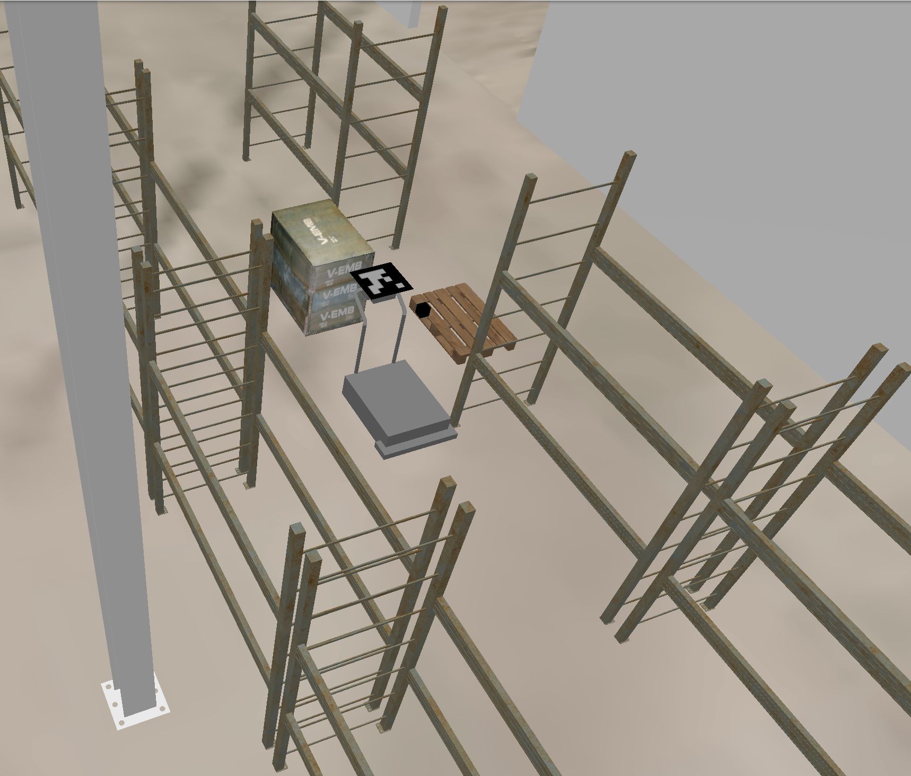
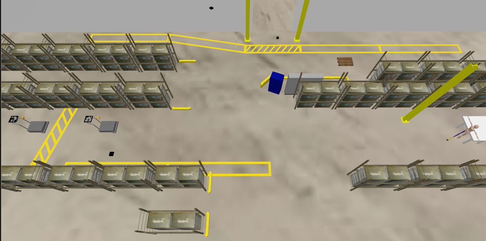

TODO - Video as GIF and embedded - Slides as Powerpoint, check videos are loaded? : Needs manual intervention (https://github.com/orgs/marp-team/discussions/491) - Infotiv intro (internal/ifotiv.pptx) - Slide notes - spellcheck and grammar check - time estimate
TO export PDF or Powerpoint : https://github.com/orgs/marp-team/discussions/491
Open-Source Simulation for Multi-Camera Robotics
The SIMLAN Framework
Hamid Ebadi
Infotiv AB
Research Projects
-
SMILE-IV: safety assurance framework for transport services
-
ARTWORK: The smart and connected worker
Volvo Projects
Volvo GTO in Tuve, Göteborg:
-
RITA (Robot In The Air) : a collaborative robot designed to assist with kitting
-
GPSS (Generic Photogrammetry based Sensor System): ceiling-mounted cameras that detect and classify all static and dynamic obstacles on the factory floor, guiding transport robots to their destinations without collisions or accidents. These cameras act as the shared "eyes" of the robot fleet.
Autonomous Robotics
SLAM
- Simultaneous localization and mapping
- Reliance on onboard sensors
- Distributed decision making
- Communication and synchronization

Autonomous Robotics (cons)
- Limited field of view
- Sensor interference (LiDAR)
- No global view
- resolving right-of-way
- avoiding gridlock
- Handling challenging environments
- no landmarks
- repetitive landmarks
- dynamic landmarks

- No mapping but only localization using fixed cameras
Centralised Robotics (pros)
- GPSS (camera based)
- Simpler onboard computation
- Focus on control
- Energy consumption
- Simpler hardware
- Easier to maintain and upgrade
- No robot-to-robot communication
Centralised Robotics (pros)
- Improved explainability and accountability
- Camera is used for safety monitoring and repudiation.
- Improving the safety by using both onboard and offboard sensors
- More flexible to add ML based models
Centralised Robotics (cons)
- Realtime needs and latency
- Centralised processing and single point of failure
Open-Source Simulation for Multi-Camera Robotics
The SIMLAN Framework
- Using simulation for complex human-robot collaboration.
- Inspired by Volvo Group’s GPSS/RITA
- Models ceiling-mounted cameras + factory layouts
- OS:
- mouse/screen compatible
- editor/harddisk compatible
- ROS: Robot Operating System
- camera/LiDAR
- steering/wheel
- robotic arm
- Gazebo: Simulator
- physics
- sensors

SIMLAN: Asset & Environment Modeling (1)
- Realistic warehouse models
- Free/Opensource 3D software: FreeCAD, Blender
- Relevant Assets:
- shelves
- pallets
- boxes, ...
- Configurable physical properties:
- collision, inertia, mass, dimensions, visuals

SIMLAN: Asset & Environment Modeling (2)

- Sensors:
- camera
- semantic segmentation
- depth sensors
- collision sensors
- Static Elements:
- boxes, pallets, shelves
- layouts
- camera coordination and orientation
- ArUco markers on agents
SIMLAN: Asset & Environment Modeling (3)

-
Dynamic Elements:
-
pallet truck
- forklift
- worker
Multi-Agent & Namespace Support & DOMAIN ID
- each agent has unique namespace + ArUco ID
- supports static & dynamic agent spawning
- isolated navigation stacks for each robot
- agents: pallet trucks, forklifts, jackal robots, human actors

Camera
Configuration/Calibration
- Intrinsics: focal lengths, principal point, distortion coeffs
- Extrinsics: rotation matrix + translation vector
- enables precise world-to-pixel projection
- crucial for image stitching & ArUco localization

Bird’s-Eye View & Image stitching
- transform world → camera → pixel coordinates
- enables stitching of multiple camera feeds
camera_bird_eye_viewpackage
ArUco Localization
- proof-of-concept GPSS system in SIMLAN
- uses OpenCV ArUco markers for localization
- multi-camera robustness
aruco_localizationpackage

ArUco Navigation
- Input:
tf2(positions) Nav2navigates (with a lot of wiring)

Safety
integrated ROS2 "Behavior Tree" for Geo-fencing and immediate truck stop upon safety triggers - loss of observability - restricted area - collision
Gazebo Actors
- Gazebo's actor supports advanced visual features like skeleton animation from COLLADA or BVH files and scripted trajectories
- Gazebo actors are static (scripted trajectories only) and cannot interact physically.
- limiting their behavior to what they are strictly scripted for

Humanoid Worker Modeling

Simulating humanoid robots to replicate real worker movement for safety monitoring and study its interaction with other agents.
- Google Mediapipe landmarks (human pose estimation).
- custom Neural Network translates landmarks to joint controls.
- MoveIt2 handles motion planning and execution of the humanoid in Gazebo.
Panda arm demo Panda arm and humanoid demo
Summary of SIMLAN Features
- lower barriers for research in robotics/ML
- dockerized dev environment
- features:
- bird’s-eye stitching
- ArUco-based localization
- ROS 2 / Nav2 integration
- Panda arm and humanoid
SIMLAN Use Cases
- rapid prototyping of ML-based localization/navigation
- reproducible experiments : consistent testing
- synthetic data generation for ML models
- safety testing without risking physical assets
- high level of interaction reinforcement learning & genetic algorithm experimentation
- CI/CD : continuous development
- V&V to support verification and validation of complex, machine learning-based systems
SIMLAN Use Cases
- cost-efficient
- scalable
- fast
- safe
- privacy-friendly
- reproducible (unit tests for CI/CD)
Open source
-
Infotiv portfolio of projects (academic papers) : https://infotiv-research.github.io/
Future Work : Reinforcement Learning
Google Deepmind
Reward for actions


Future Work : Machine Learning

Future Work : Classic AI

Future Work : Generative AI (upscaling)

Future Work : Generative AI
- output is not known
- low dimension to high dimension
- hallucination
Examples: - text -> image - blurry image -> sharp image - text -> more text (LLMs)
Future Work : WFM
- distribute computation across nodes
- move from ArUco markers : markerless vision pipelines
- integrate World Foundation Models (e.g., NVIDIA Cosmos)
- style transfer w/ GANs : higher visual fidelity
- human-robot interaction simulation

Conclusion
- SIMLAN: powerful platform for indoor multi-camera robotics
- reproducible, scalable, open-source
- useful for academia & industry
- roadmap: ML integration, human-robot collaboration, sim-to-real transfer
- need your support
Technical Highlights
- simulation Engine: Ignition Gazebo (High-fidelity physics and sensor models)
- middleware: ROS 2 (Jazzy Jalisco) for component communication
- developer environment: Docker + VSCode devcontainers (consistency and reproducibility)
- documentation: extensive & reproducible
Acknowledgements
- INFOTIV AB
- SMILE IV (Vinnova grant 2023-00789)
- EUREKA ITEA4 ArtWork (Vinnova grant 2023-00970)
- INFOTIV Colleagues: Pär Aronsson, Anton Hill, David Espedalen, Siyu Yi, Anders Bäckelie, Jacob Rohdin, Vasiliki Kostara, Nazeeh Alhosary, Marwa XXXXXX
- Other contributors: Tove Casparsson , Filip Melberg (Chalmers), Christoffer Johannesson, Sebastian Olsson, Hjalmar Ruscck from Dyno-robotics, Erik Brorsson (Chalmers/Volvo),
- Other Partners: Infotiv AB, RISE, Volvo Group, Dyno-Robotics, Chalmers
| INFOTIV AB | Dyno-robotics | RISE Research Institutes of Sweden | CHALMERS | Volvo Group |
|---|---|---|---|---|
 |
 |